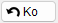
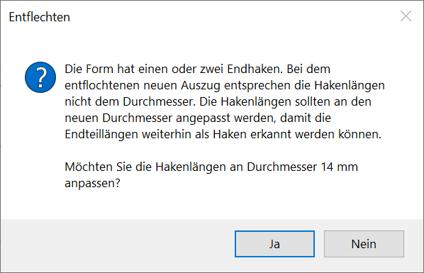
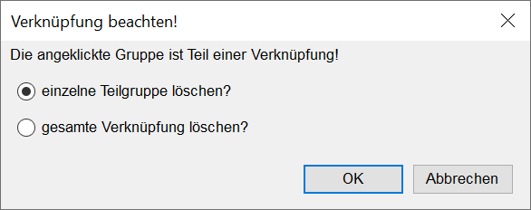

")
")
§Klicken Sie eine Linie der Staffel an, die gelöscht werden soll. [Welche Gruppe?].
-Die Darstellung der Staffel inklusive der Beschriftung wird entfernt. Sie können sofort weitere Staffeln löschen.
-Solange Sie diesen Befehl nicht verlassen, können Sie durch 
-Wenn mehrere Positionen an einem Auszug vorhanden sind und die Position mit dem größten Durchmesser gelöscht wird, können die Hakenlängen an den nächstgrößeren Durchmesser angepasst werden. Sie erhalten in diesem Fall eine Meldung. Wählen Sie Ja, um die Hakenlängen an den neuen Durchmesser anzupassen. Wählen Sie Nein, wenn die aktuelle Hakenlänge nicht geändert werden soll.
 |
Verknüpfte Verlegungen löschen
§Wenn die angeklickte Verlegung Teil einer Verknüpfung ist, erhalten Sie die folgende Meldung:
 |
Sie können nur die angeklickte Verlegung löschen, oder alle Verlegungen, die mit der angeklickten Verlegung verknüpft sind.
§Wählen Sie eine der folgenden Optionen:
a)einzelne Teilgruppe löschen?
Löscht nur die angeklickte Verlegung.
b)gesamte Verknüpfung löschen?
Löscht die angeklickte Verlegung zusammen mit allen verknüpften Verlegungen. Der Auszugstext wird nach der Aktion zurückgesetzt und liegt in der Form … ? ø ? (…) vor.
§Bestätigen Sie die Auswahl mit OK, oder brechen Sie die Aktion mit Abbrechen ab.